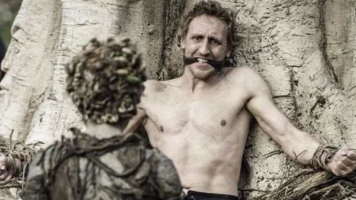
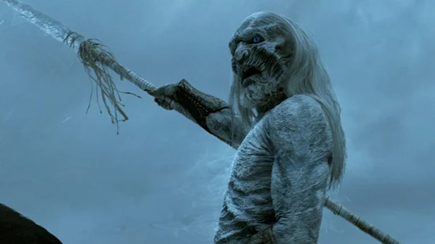
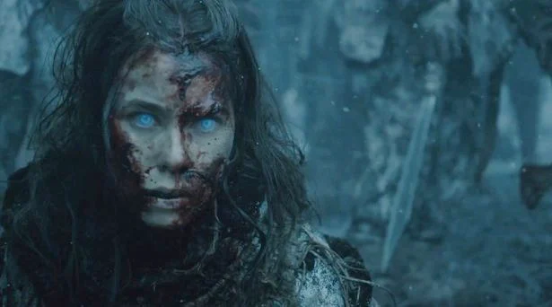

Los Otros, conocidos entre el Pueblo Libre como Caminantes Blancos,
son criaturas que existen al norte del Muro. Al haber desaparecido
por casi ocho mil años tras la Edad de los Héroes, se les considera
muchas veces criaturas legendarias que solo aparecen en los cuentos
de terror
Los Caminantes Blancos fueron creados por primera vez por los Hijos
del Bosque como una forma de luchar contra los Primeros Hombres

Los Hijos del Bosque son los habitantes originarios de Poniente,
quienes vivían en el continente mucho antes de la llegada de los
Primeros Hombres durante la Era del Amanecer.
Fueron creados por los Hijos del Bosque hace miles de años cuando
vieron que los humanos eran una amenaza para su existencia. Les
cortaban sus árboles sagrados y les asesinaban. Es por esto que estas
criaturas decidieron convertir algunos Primeros Hombres en armas
contra ellos mismos. Insertaron una daga de vidriagón en un humano y
este se convirtió en el primer Caminante Blanco. El problema es que el
experimento se les fue de las manos. Los querían únicamente como armas
bélicas y se les rebelaron. Es por esto que los humanos y los Hijos
del Bosque crearon el Muro para separar los Otros de los vivos.


Es un ser milenario que posee una gran cantidad de habilidades mágicas
que lo vuelven un enemigo sumamente peligroso. Tiene fuerza y agilidad
sobrehumana, es invulnerable al fuego y al acero. Puede levantar a los
muertos y controlarlos como esbirros, además de que puede convertir a
otros humanos en caminantes blancos para que sirvan como sus
lugartenientes.

Tiene también la habilidad de controlar y cambiar abruptamente el
clima del lugar donde se encuentra, generando terribles tormentas de
nieve; además con sólo tocar el suelo puede crear pequeños temblores a
voluntad. El Rey de la Noche también usa espadas, lanzas y otras armas
mágicas, aparentemente automanufacturadas. Pero, sin duda, sus
habilidades más místicas son sus poderes psíquicos similares a los del
Cuervo de los Tres Ojos, su enemigo natural.

Se caracterizan por tener los ojos azules, pelo blanco y por poder
montar a caballo y portar armas y, aunque son menos que los Espectros,
son más poderosos.

La "segunda categoría" de este ejército y los más numerosos. Cada
Caminante Blanco tiene la habilidad de otorgar "vida" a los cadáveres
de humanos y que pasen a formar parte de su bando como Espectros bajo
sus órdenes. Son bastante más torpes que los anteriores, pero inmunes
al dolor, por lo que no se detienen ante los ataques. Se sabe que, si
muere un Caminante Blanco, también lo hacen todos los espectros que
creó